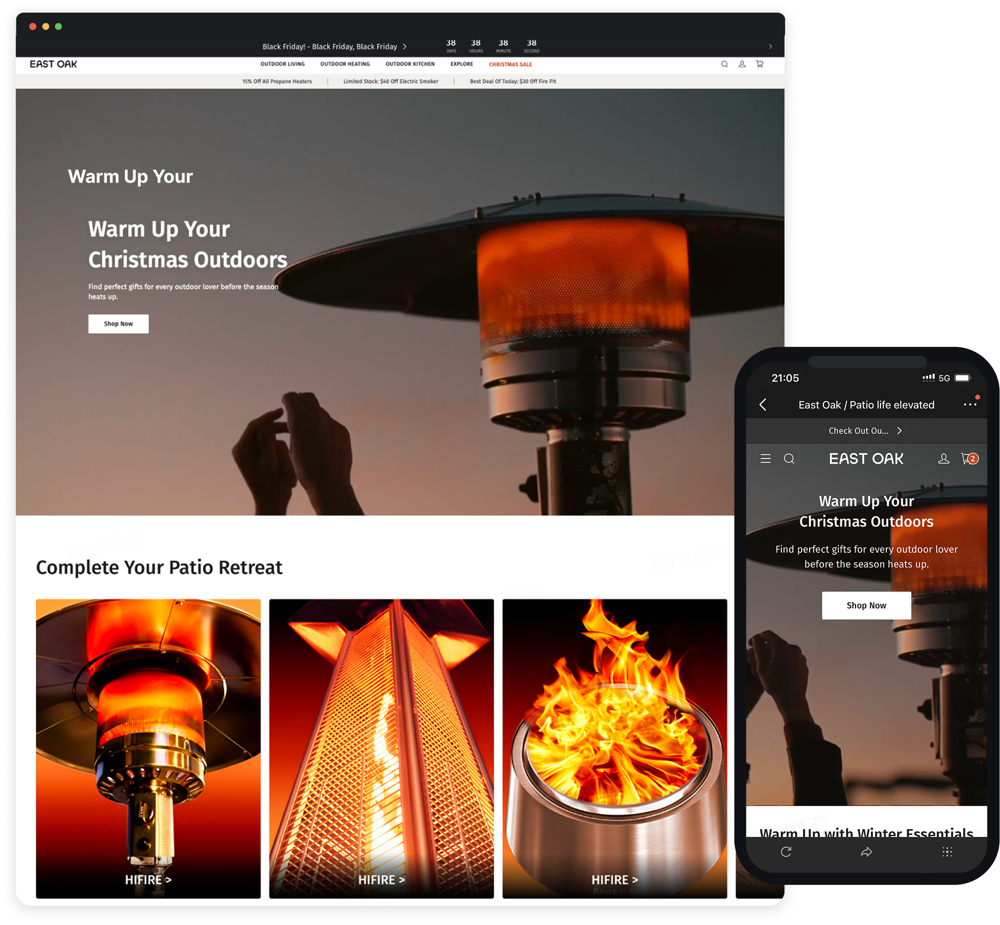
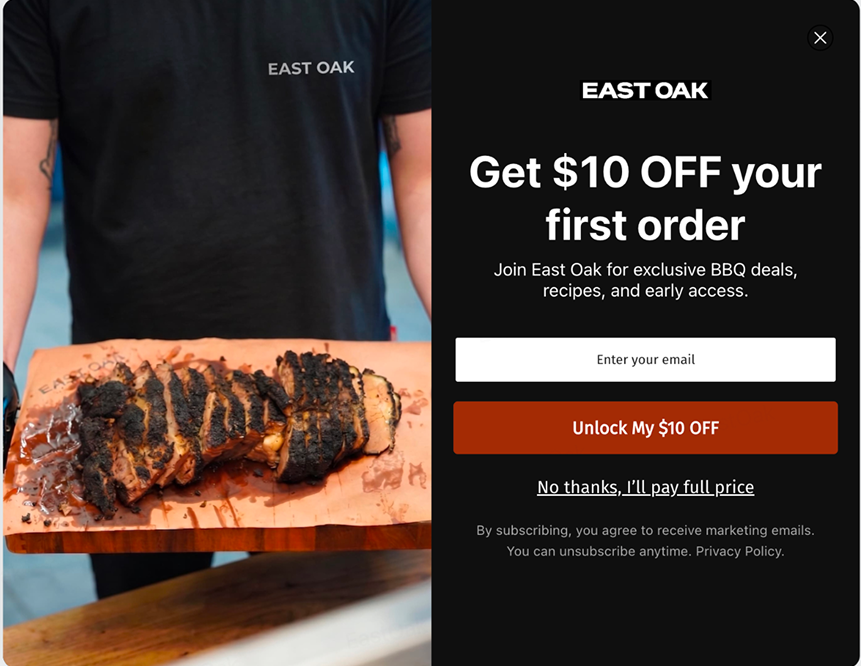
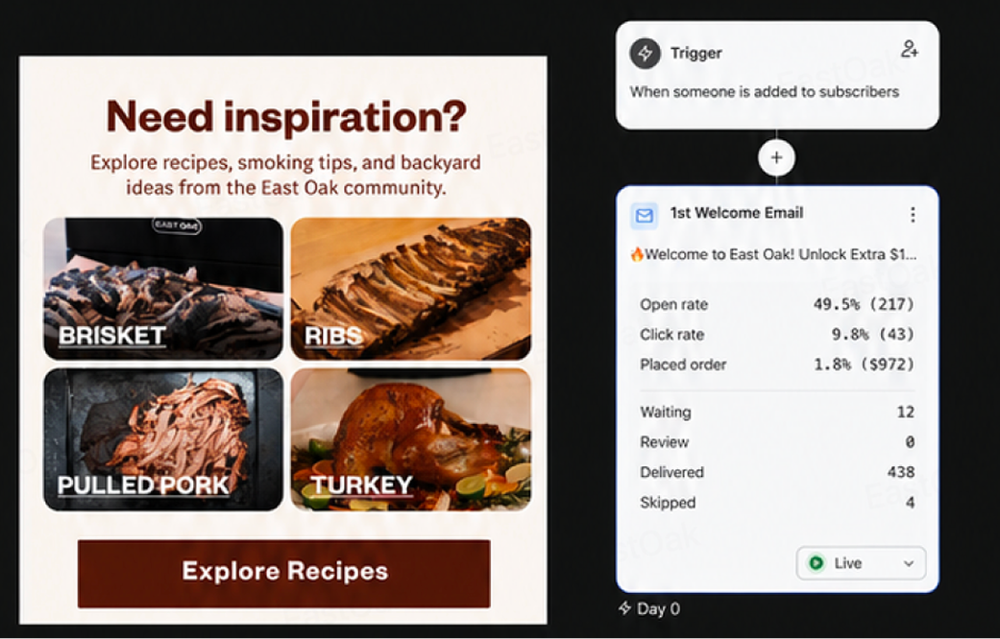
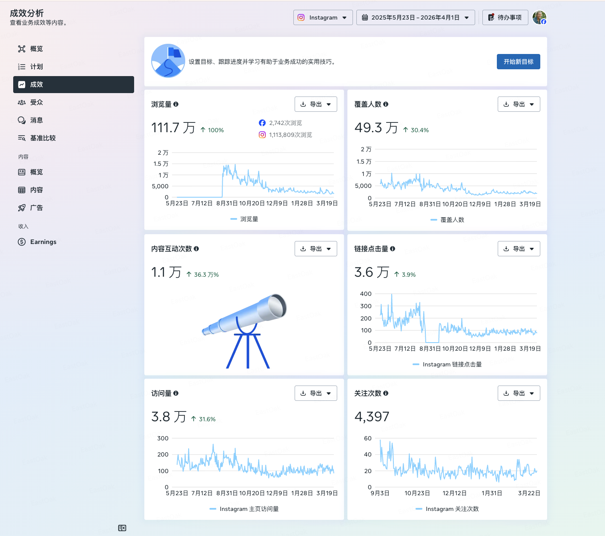

MediaDesktop / Mobile Image or VideoCopyEyebrow / Heading / BodyActionsPrimary / Secondary CTA
Back to all work
SHOPIFY · COMPONENT SYSTEM · EMAIL
EAST OAK
A Shopify 2.0 Storefront Upgrade
The team redesigned EAST OAK’s Shopify storefront around its products and brand direction. I designed core pages, component guidelines and emails, working with development, marketing and operations through launch. AI was gradually introduced into selected design and development tasks.
My roleCore Page Design · Reusable Components · Email Marketing

PROJECT SNAPSHOT
[2024—2026]
Context & Responsibilities
- CHALLENGE
- Before the redesign, product launches and campaigns often required pages to be designed again. Operations depended on one-off deliverables, while styles and information hierarchy varied across pages.
- MY ROLE
- UX/UI, visual direction, component guidelines, email design and operations, project coordination and launch checks.
- TEAM
- Cross-functional collaboration
Marketing · Development · Content · Operations
- TOOLS USED
- FigmaShopifyKlaviyoCodexAdobe
01 · REUSABLE COMPONENTS
Turn recurring banners into configurable Shopify sections.
I reviewed recurring page and campaign needs, then broke repeated banner layouts into media, copy, actions and display rules. Operations could replace content and adjust positioning, overlays and height in Shopify without redesigning the whole page.
REUSABLE BANNER SYSTEM
Separate controls for desktop and mobile.
Desktop and mobile assets and content placement can be configured separately. The component can be reused on homepages, product content areas and campaign pages.
CONFIGURABLE SECTIONREUSABLE BANNERContent Slots · Display Controls
Visual Layer · Responsive Rules
Visual Layer · Responsive Rules
HorizontalLeft / Center / RightVerticalTop / Middle / BottomText AlignLeft / Center / RightContent WidthSmall / Medium / LargeSection HeightAuto / Fixed / Full screenFocal PointMedia focus position
Overlay TypeSolid / GradientOverlay ColorBrand or custom colorOpacityText readability controlText ColorLight / Dark / CustomFallbackBackground color
Mobile AssetIndependent mediaMobile PositionContent placementContent OrderMedia / Copy / CTAVideo BehaviorAutoplay / Loop / Poster
HOMEPAGEBrand & featured products
PDPProduct benefits & content modules
CAMPAIGN PAGEProduct launches & promotions
02 · CORE PAGES
A homepage for discovery. Product pages for decisions.
Page explorations across discovery, browsing, purchase and account management

02B · LIVE EXPERIENCE
The completed page designs.
The homepage reorganized featured content, category entries and use cases to connect campaigns with relevant products. Operations could update individual content modules independently.

PDP
Product pages grouped imagery, price, specifications, variants and the purchase action near the top. Modular sections below covered dimensions, performance, accessories, shipping and reviews, allowing customers to explore the details they needed.
PRODUCT EDUCATIONDifferent products shared a core structure, with additional features and instructions tailored to each product.
03 · LIFECYCLE GROWTH
Match email content to the customer journey.
A $10 first-visit offer encouraged email sign-up, followed by an automated welcome flow with the offer and relevant content. Before and after purchase, campaign emails and automated flows provided usage guidance, new products, promotions and accessory information.
Visit & subscribe Welcome emails Purchase Use & ongoing communication

Email sign-up popup

Welcome emails

Campaign & usage content
05 · LAUNCH & HANDOFF
From repeated page production to independent content updates.
Recurring banners became reusable Shopify sections, allowing launches and campaigns to follow a consistent set of page rules.
My contributionDesigned core pages and component guidelines, and supported email design, development collaboration and launch checks.
Team deliveryWorked with development, marketing, content and operations to implement the designs in Shopify and launch the storefront.
04 · SOCIAL MEDIA
Extend brand communication into ongoing social content.
Alongside website and email work, I managed EAST OAK’s social media. The figures below separately show Instagram performance during my account management period.
May 23, 2025–Apr 1, 2026Instagram · Account management period
Source: Meta Insights. Views refer to Instagram only. Figures are rounded from the dashboard screenshot and do not distinguish organic from paid activity.
View dashboard record ＋
